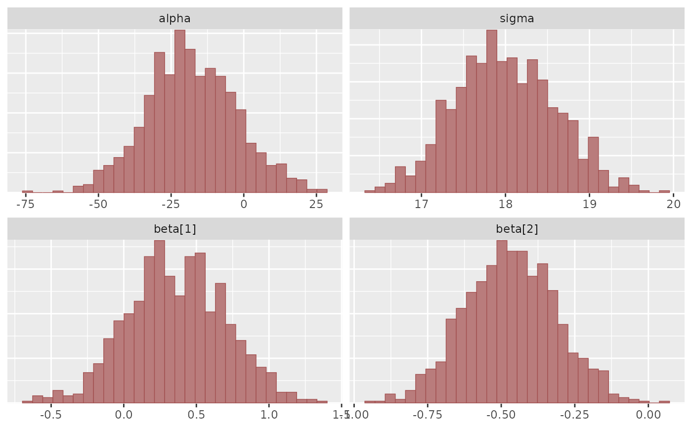
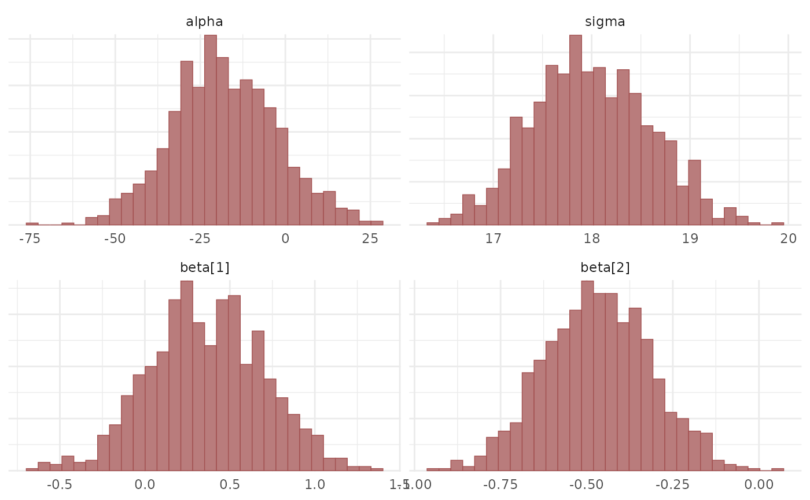
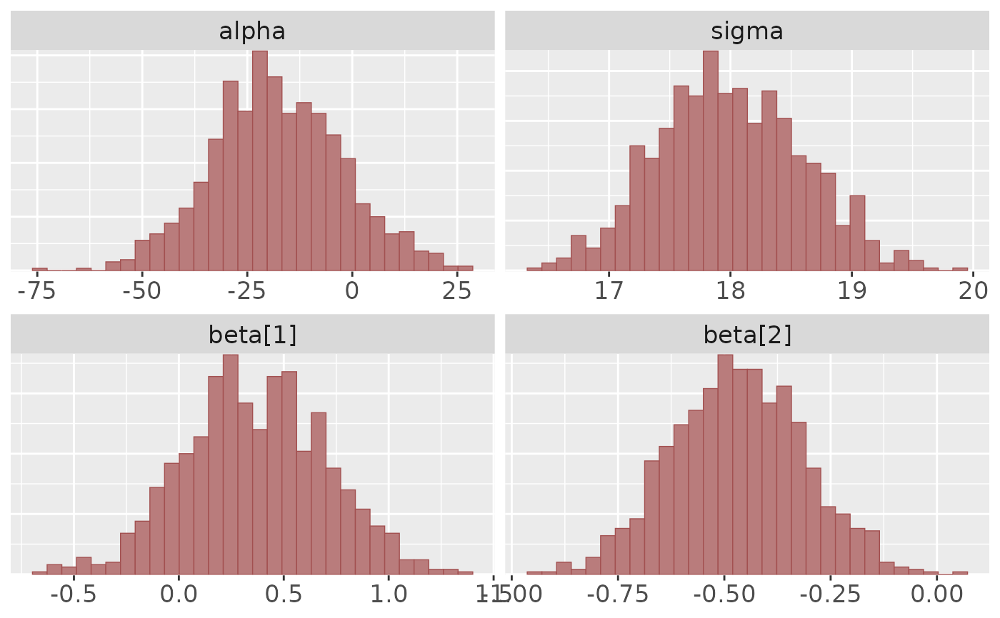
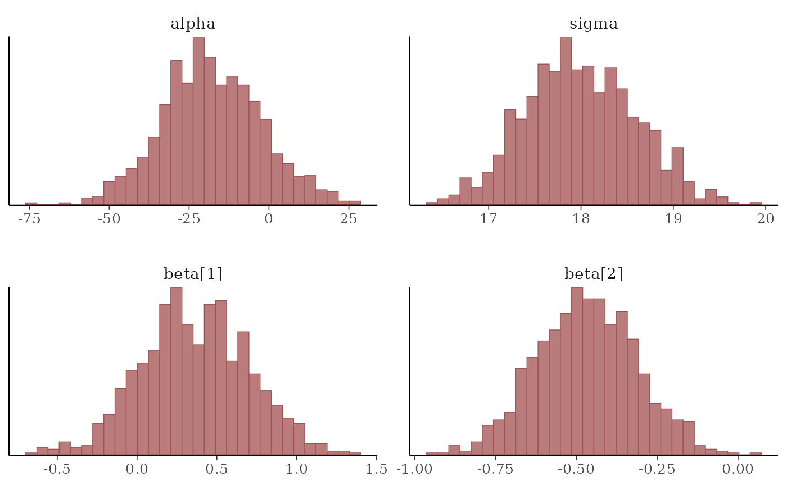
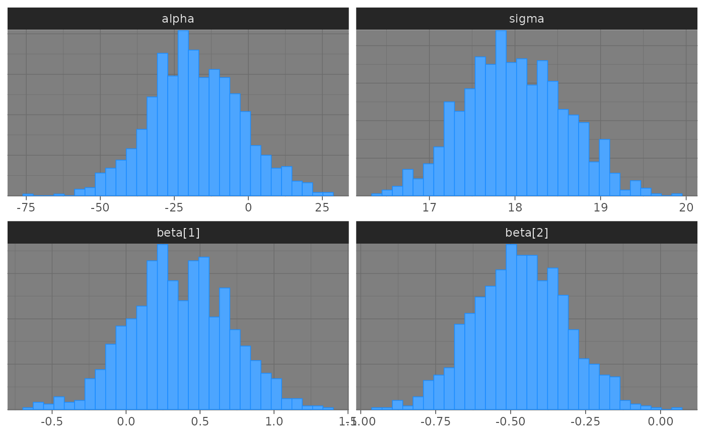
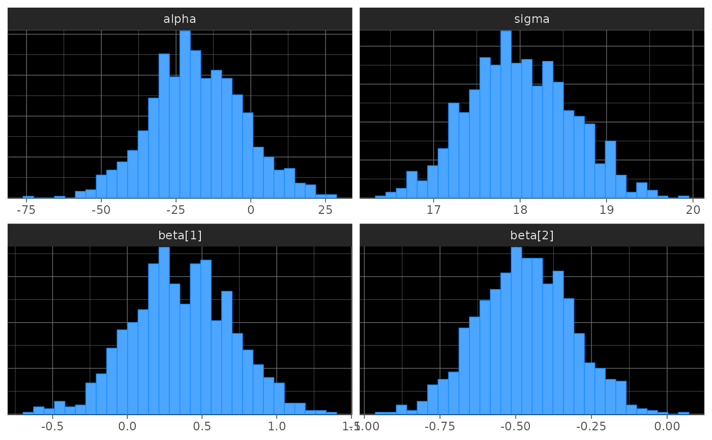

Get, set, and modify the active bayesplot theme
Source:R/bayesplot-ggplot-themes.R
bayesplot_theme_get.RdThese functions are the bayesplot equivalent to
ggplot2's ggplot2::theme_set() and friends. They set, get, and update
the active theme but only apply them to bayesplots. The current/active
theme is automatically applied to every bayesplot you draw.
Use bayesplot_theme_get() to get the current bayesplot theme and
bayesplot_theme_set() to set a new theme. bayesplot_theme_update() and
bayesplot_theme_replace() are shorthands for changing individual elements.
Usage
bayesplot_theme_get()
bayesplot_theme_set(new = theme_default())
bayesplot_theme_update(...)
bayesplot_theme_replace(...)Arguments
- new
The new theme (list of theme elements) to use. This is analogous to the
newargument toggplot2::theme_set().- ...
A named list of theme settings.
Value
bayesplot_theme_get() returns the current theme. The other three
functions (set, update, replace) invisibly return the previous theme
so it can be saved and easily restored later. This is the same behavior as
the ggplot2 versions of these functions.
Details
bayesplot_theme_set() and friends only apply to bayesplots.
However, ggplot2::theme_set() can also be used to change the
bayesplot theme. Currently, setting a theme with ggplot2::theme_set()
(other than the ggplot2 default ggplot2::theme_grey()) will override
the bayesplot theme.
See also
theme_default() for the default bayesplot theme.
bayesplot-helpers for a variety of convenience functions, many of which provide shortcuts for tweaking theme elements after creating a plot.
bayesplot-colors to set or view the color scheme used for plotting.
Examples
library(ggplot2)
# plot using the current value of bayesplot_theme_get()
# (the default is bayesplot::theme_default())
x <- example_mcmc_draws()
mcmc_hist(x)
#> `stat_bin()` using `bins = 30`. Pick better value `binwidth`.

# change the bayesplot theme to theme_minimal and save the old theme
old <- bayesplot_theme_set(theme_minimal())
mcmc_hist(x)
#> `stat_bin()` using `bins = 30`. Pick better value `binwidth`.

# change back to the previous theme
bayesplot_theme_set(old)
mcmc_hist(x)
#> `stat_bin()` using `bins = 30`. Pick better value `binwidth`.
# change the default font size and family for bayesplots
bayesplot_theme_update(text = element_text(size = 16, family = "sans"))
mcmc_hist(x)
#> `stat_bin()` using `bins = 30`. Pick better value `binwidth`.

# change back to the default
bayesplot_theme_set() # same as bayesplot_theme_set(theme_default())
mcmc_hist(x)
#> `stat_bin()` using `bins = 30`. Pick better value `binwidth`.

# updating theme elements
color_scheme_set("brightblue")
bayesplot_theme_set(theme_dark())
mcmc_hist(x)
#> `stat_bin()` using `bins = 30`. Pick better value `binwidth`.

bayesplot_theme_update(panel.background = element_rect(fill = "black"))
mcmc_hist(x)
#> `stat_bin()` using `bins = 30`. Pick better value `binwidth`.

# to get the same plot without updating the theme we could also have
# used the bayeplot convenience function panel_bg()
bayesplot_theme_set(theme_dark())
mcmc_hist(x) + panel_bg(fill = "black")
#> `stat_bin()` using `bins = 30`. Pick better value `binwidth`.
# reset
bayesplot_theme_set()